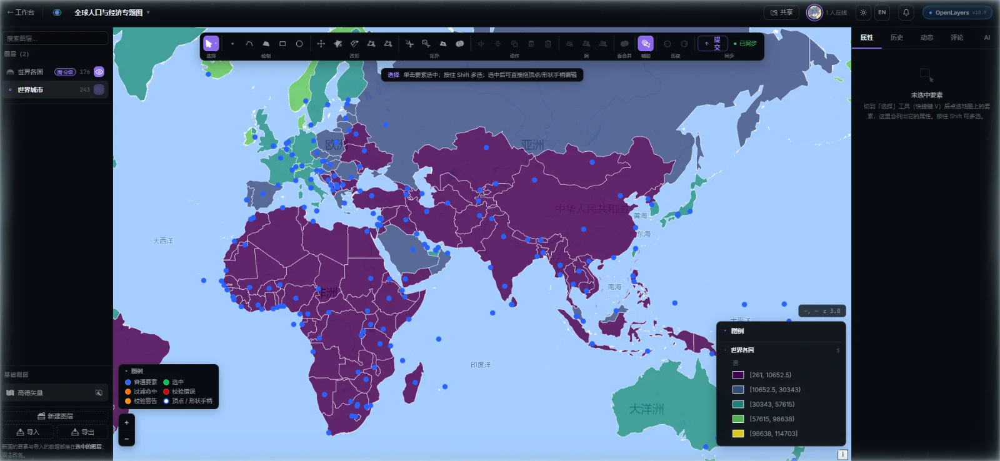
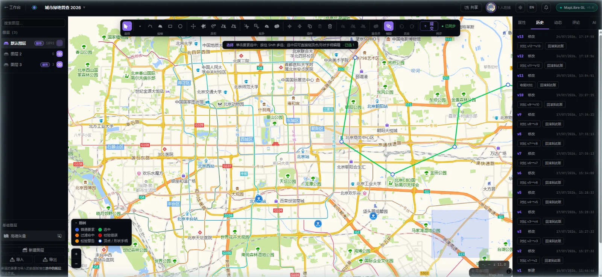
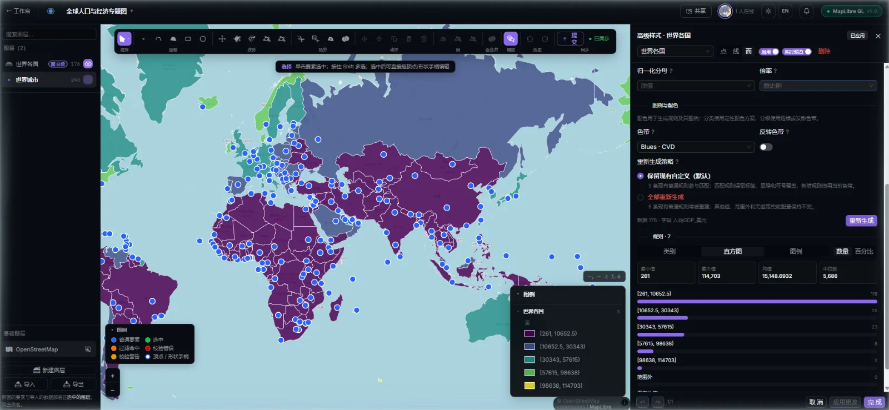
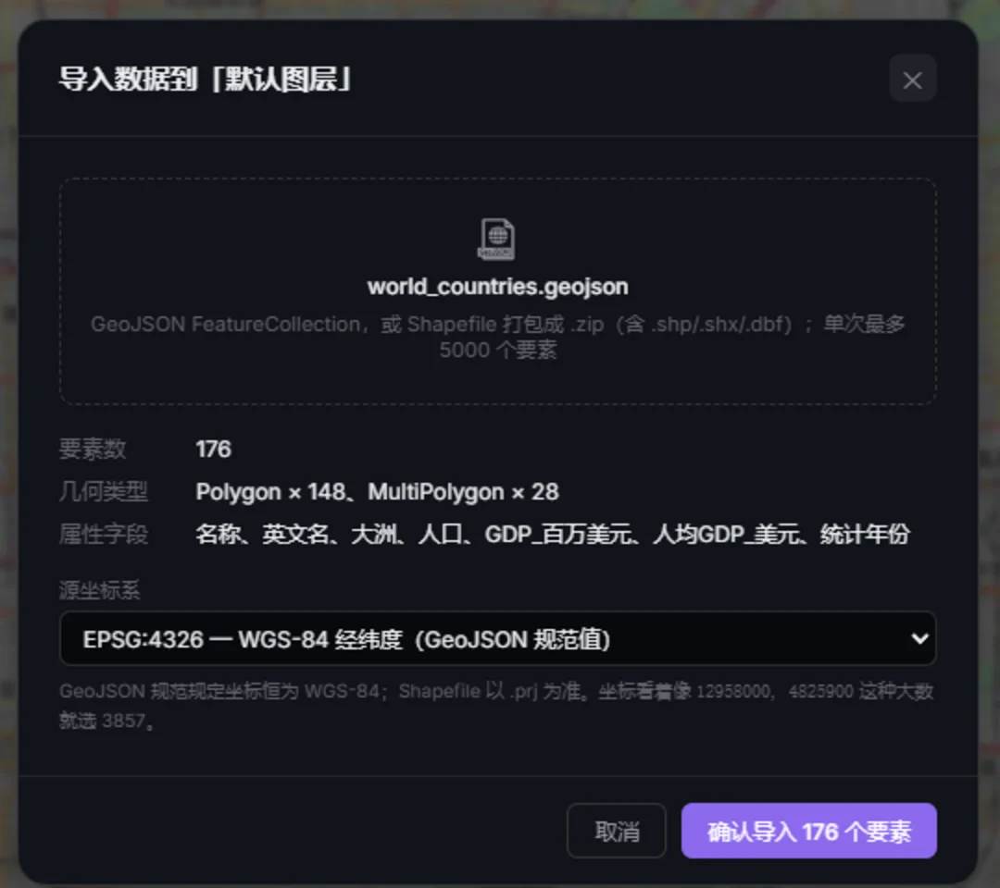
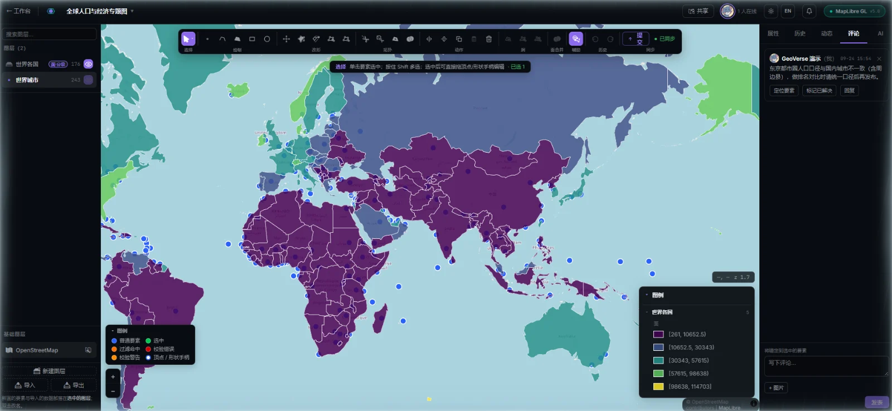
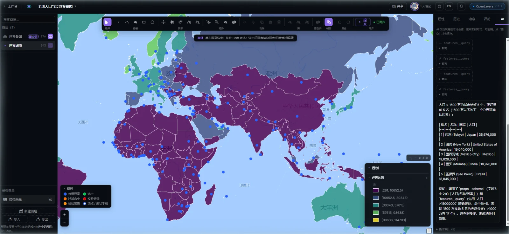
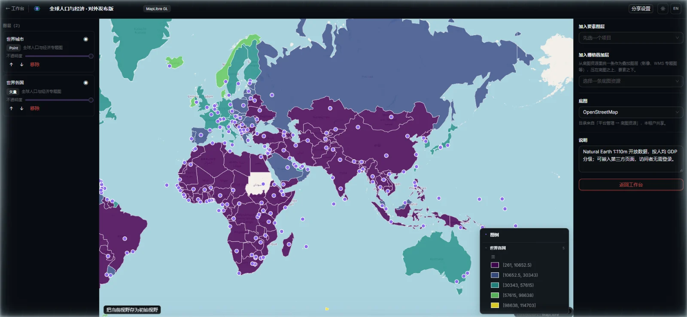
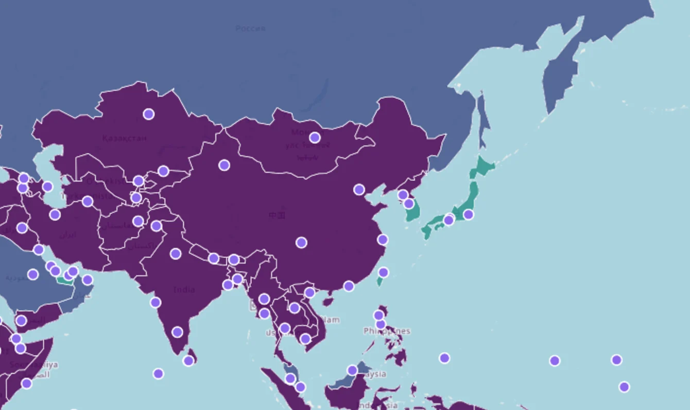
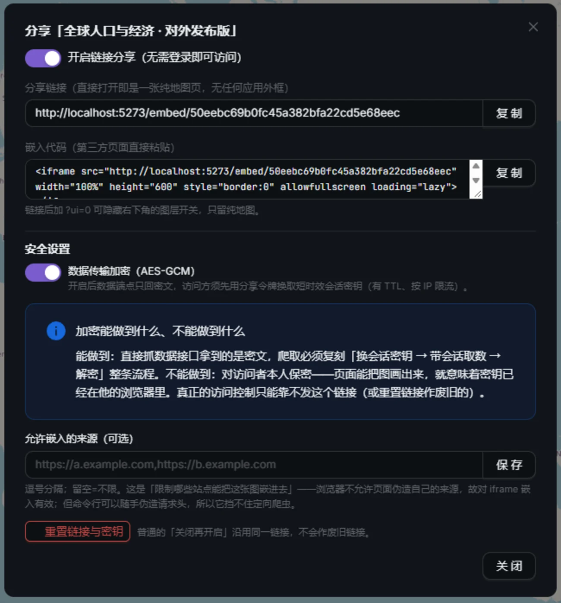
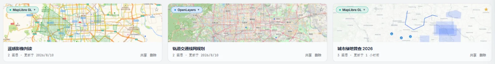

01 · Dual Engine
同一个项目，OpenLayers 与 MapLibre 随时切换One project — switch between OpenLayers and MapLibre at any time
渲染引擎是项目的一个属性。图层、样式、专题规则和协作数据在两条引擎上完全通用，切换后打开就是同一张图。OpenLayers 轨原生适配高德、天地图等 GCJ-02 底图，MapLibre 轨提供矢量瓦片与平滑缩放。
The rendering engine is a project property. Layers, styles, thematic rules and collaboration data carry over fully between the two engines, so after switching you open the same map. The OpenLayers engine natively supports Chinese GCJ-02 basemaps such as Amap and Tianditu; the MapLibre engine adds vector tiles and smooth zooming.


02 · Editing & History
专业要素编辑，每一次提交都有版本Professional feature editing — every commit is a version
面向测绘和规划数据的编辑器，编辑先落在浏览器本地会话，确认后一次提交到服务端。
An editor built for surveying and planning data. Edits land in a local browser session first and reach the server in a single commit once you confirm.
- 绘制与改形：点、线、面、矩形、圆；移动、顶点编辑、旋转缩放变换、镜像、复制粘贴
- 拓扑工具：打断、切面、合并、开洞 / 填洞 / 消洞，吸附与对齐辅助线
- 撤销重做与乐观锁：多人改同一要素时自动检测冲突，按字段三路合并
- 版本历史：逐版本查看、对比差异、一键回滚
- Draw and reshape: points, lines, polygons, rectangles and circles; move, edit vertices, rotate and scale, mirror, copy and paste
- Topology tools: split lines, cut polygons, merge; open holes out to the boundary, fill holes, close notches back into holes; snapping and alignment guides
- Undo/redo and optimistic locking: when several people edit the same feature, conflicts are detected automatically and reconciled with a field-level three-way merge
- Version history: browse any version, see what changed, roll back in one click

03 · Thematic Mapping
按属性出专题图，规则、直方图、图例联动Thematic maps by attribute, with rules, histogram and legend in sync
在「高级样式」工作台里选字段、选方法，几秒生成分类或分级规则，画布实时预览。
In the Advanced Style workbench, pick a field and a method to generate categorised or graduated rules in seconds, with a live preview on the canvas.
- 分类 / 分级：自然断点、分位数、等距或手工断点
- 归一化：人口密度、人均指标等「字段 ÷ 字段」一步完成
- 色带：定性配色、连续与发散色带，含色觉友好（CVD）方案
- 富样式：图标库（Maki / Temaki / 自定义）、线型、文本标注、动画路径
- Categorised / graduated: natural breaks, quantiles, equal intervals or manual breaks
- Normalisation: population density, per-capita figures and other "field ÷ field" ratios in one step
- Colour ramps: qualitative, sequential and diverging palettes, including schemes that are safe for colour-vision deficiency (CVD)
- Rich styling: icon libraries (Maki / Temaki / custom), line patterns, text labels, animated paths

04 · Data In & Out
数据进得来，也出得去Data comes in — and goes out
拖入文件先做结构预检和几何校验，给出要素数、几何类型和字段，确认后才落库。
Dropped files are checked for structure and geometry validity first. You see the feature count, geometry types and fields, and nothing is stored until you confirm.
- 文件导入：GeoJSON、Shapefile（.zip），可指定源坐标系
- 数据源连接：PostGIS、REST、WMS、S3 / MinIO
- 导出：按图层导出 GeoJSON
- 空间数据库：PostgreSQL + PostGIS 存储，服务端做几何有效性校验
- File import: GeoJSON and Shapefile (.zip), with a selectable source coordinate system
- Data-source connections: PostGIS, REST, WMS, S3 / MinIO
- Export: GeoJSON per layer
- Spatial database: PostgreSQL + PostGIS storage, with server-side geometry validation

05 · Collaboration & AI
多人一起改图，AI 帮你查和改Edit maps together — and let AI look things up and make changes
项目成员实时在线：在线状态、光标、变更广播和评论即时同步；AI 助手用自然语言操作当前图层。
Project members work together live: presence, cursors, change broadcasts and comments sync instantly, and the AI assistant acts on the current layer from plain-language requests.


06 · Open & Share
把图层组合成地图，分享给不需要登录的人Combine layers into a map and share it — no login required
「综合地图」可以跨项目叠加有权限的图层，生成免登录的分享链接或 iframe 嵌入代码。数据端点支持 AES-GCM 密文传输，可限定允许嵌入的来源。
With a composite map you can stack any layers you have access to across projects, then generate a login-free share link or iframe embed code. Data endpoints support AES-GCM encrypted transport and can be limited to approved embedding origins.



07 · More
更多能力More capabilities
项目工作台Project workspace
项目卡片带实时缩略图，支持星标、最近打开、共享给我、模板与回收站。
Project cards with live thumbnails, plus Starred, Recently opened, Shared with me, Templates and Trash views.
权限与多租户Permissions and multi-tenancy
团队即租户；项目级所有者 / 可编辑 / 可评论三角色，服务端强制校验。
Each team is a tenant. Three project-level roles (owner / editor / commenter) are enforced on the server.
平台管理后台Admin console
监控总览、用户与角色、通知公告、站内信、底图资源、地区库、图标库、地图服务、参数与敏感词、在线会话与日志。
Monitoring overview, users and roles, announcements, in-app messages, basemaps, region library, icon library, map services, parameters and sensitive-word filters, online sessions and logs.
国内坐标系China's coordinate systems
GCJ-02、BD-09、天地图底图就地纠偏，数据统一以 WGS-84 存储。
GCJ-02, BD-09 and Tianditu basemaps are corrected in place; all data is stored in WGS-84.
地图服务发布Map service publishing
图层一键发布到 GeoVerse Serve，数据不复制，要素改了切片就更新。
Publish a layer to GeoVerse Serve in one click. The data isn't copied, so tiles update as soon as features change.
私有化部署Private deployment
Docker Compose 编排全栈，Nacos 注册配置，适配内网环境。
The full stack runs on Docker Compose, with Nacos for service registration and configuration, and works on private networks.

08 · Architecture
技术栈Technology stack
| 前端Frontend | React 19 · TypeScript · Vite；GeoVerse SDK（OpenLayers 10 / MapLibre GL 5 双引擎门面、框架无关编辑引擎）React 19 · TypeScript · Vite; GeoVerse SDK (dual-engine facade over OpenLayers 10 / MapLibre GL 5, framework-agnostic editing engine) |
|---|---|
| 后端Backend | Spring Boot 3.5 · JDK 21 · Spring Cloud Alibaba 微服务（网关 / 系统 / 基础设施 / 地理服务）Spring Boot 3.5 · JDK 21 · Spring Cloud Alibaba microservices (gateway / system / infrastructure / geo services) |
| 数据与基建Data and infrastructure | PostgreSQL 16 + PostGIS（经 mybatis-plus-geometry 存取几何）· Redis · MinIO / S3 · NacosPostgreSQL 16 + PostGIS (geometry persisted via mybatis-plus-geometry) · Redis · MinIO / S3 · Nacos |
| AI | GeoVerse SAR 空间智能运行时，在浏览器内接入编辑会话，带操作审计与宏撤销GeoVerse SAR AI-native spatial runtime, connected to the editing session in the browser, with an operation audit trail and macro undo |
| 部署Deployment | Docker 镜像 + Compose 编排，支持私有化与内网部署Docker images orchestrated with Compose, for private and on-premises (intranet) deployment |
09 · GeoVerse Labs
同一条工具链上的其他产品Other products in the same toolchain
GeoVerse Live 是 GeoVerse Labs 空间工具链的应用层。下面这些构件可以单独使用，也都在 Live 里各司其职。
GeoVerse Live is the application layer of the GeoVerse Labs spatial toolchain. Each building block below can be used on its own, and each has a specific role inside Live.
GeoVerse SDK ↗
Live 的地图与编辑底座：一套 API 跑在 OpenLayers 或 MapLibre 上。打开在线 Playground。
Live's mapping and editing foundation: one API on either OpenLayers or MapLibre. Opens the online playground.
GeoVerse Serve ↗
Live 图层的发布出口：单二进制 Go 服务，输出 MVT、WMTS、OGC API 与 MCP。MIT 开源。
Where Live layers get published: a single Go binary serving MVT, WMTS, OGC API and MCP. MIT open source.
GeoVerse SAR ↗
Live AI 助手背后的运行时：能力即工具、单一漏斗、可撤销。MIT 开源，技术预览。
The runtime behind Live's AI assistant: capabilities as tools, a single governed funnel, undoable changes. MIT open source, technical preview.
GeoVerse Line Finder ↗
零依赖 GeoJSON 寻路库，支持多楼层室内路线。打开在线示例。
Zero-dependency GeoJSON routing library with multi-level indoor routes. Opens the online playground.
▶ 52 秒宣传片▶ 52-second film
从一个坐标到一条路线，一次看完整条工具链。
From a single coordinate to a route — the whole toolchain at a glance.
GeoVerse Labs 主页 →GeoVerse Labs home →
全部产品、在线体验、国内坐标系换算与开源项目。
All products, live demos, China coordinate conversion and open-source projects.
想看完整演示？Want to see the full demo?
GeoVerse Live 目前为私有项目，暂未开源。欢迎联系预约演示、申请早期访问或洽谈私有化部署。
GeoVerse Live is currently a private product and is not open source. Get in touch to book a demo, request early access or discuss private deployment.